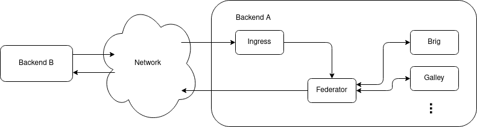

1. Federation Achitecture
1.1. Backends
In the following we call a backend the set of servers, databases and DNS configurations that together form one single Wire Server entity as seen from the outside. It can also be called a Wire “instance” or “server” or “Wire installation”. Every resource (e.g. users, conversations, assets and teams) exists and is owned by a single backend, which we can refer to as that resource’s backend.
The communication between federated backends is facilitated by two components in each backend: Federation Ingress and Federator. The Federation Ingress is, as the name suggests, the ingress point for incoming connections from other backends, which are then forwarded to the Federator. The Federator forwards requests to internal components. It also acts as a egress point for requests from internal backend components to other, remote backends.

1.2. Backend domains
Each backend has two domain: an infrastructure domain and a backend domain.
The infrastructure domain is the domain name under which the backend is actually reachable via the network. It is also the domain name that each backend uses in authenticating itself to other backends.
Similarly, there is the backend domain, which is used to qualify the names and identifiers of users local to an individual backend in the context of federation.
The distinction between the two domains allows the owner of a backend
domain, e.g. example.com, to host their Wire backend under a
different infrastructure domain, e.g. wire.infra.example.com.
1.3. Federation Ingress
The Federation Ingress is a Kubernetes ingress and uses nginx as its underlying software.
It is configured with a set of X.509 certificates, which acts as root of trust for the authentication of the infrastructure domain of remote backends, as well as with a certificate, which it uses to authenticate itself toward other backends.
Its functions are:
to terminate TLS connections
to perform mutual Authentication as part of the TLS connection establishment
to forward requests to the local Federator instance, along with the remote backend’s client certificate
1.4. Federator
The Federator performs additional authorization checks after receiving federated requests from the Federation Ingress and acts as egress point for other backend components. It can be configured to use an allow list to authorize incoming and outgoing connections, and it keeps an X.509 client certificate for the backend’s infrastructure domain to authenticate itself towards other backends. Additionally, it requires a connection to a DNS resolver to discover other backends.
When receiving a request from an internal component, the Federator will:
If enabled, ensure the target domain is in the allow list,
Discover the other backend,
Establish a mutually authenticated channel to the other backend using its client certificate,
Send the request to the other backend and
Forward the response back to the originating component (and eventually to the originating Wire client).
The Federator also implements the authorization logic for incoming requests and acts as intermediary between the Federation Ingress and the internal components. The Federator will, for incoming requests from remote backends (forwarded via the local Federation Ingress):
Discover the mapping between backend domain claimed by the remote backend and its infra domain,
Verify that the discovered infrastructure domain matches the domain in the remote backend’s client certificate,
If enabled, ensure that the backend domain of the other backend is in the allow list.
Forward requests to other wire-server components.
1.5. Service components
Components such as Brig, Galley, Cargohold are responsible for actual business logic and interfacing with databases and non-federation related external services. See source code documentation. In the context of federation, their functions include:
For incoming requests from other backends: per-request authorization
Outgoing requests to other backends are always sent via a local Federator instance.
For more information of the functionalities provided to remote backends through their Federator, see the federated API documentation.